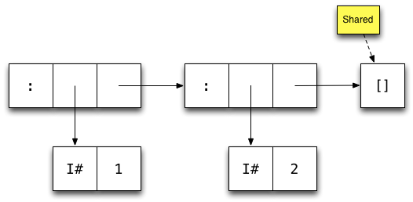
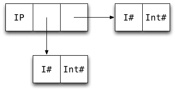
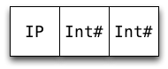
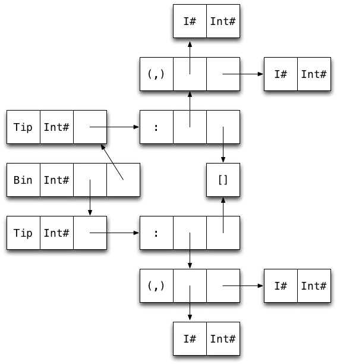
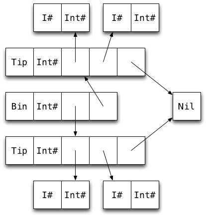

Johan Tibell
November 30, 2011
Software engineer at Google
Started using Haskell in 2005.
Worked on (among other things) GHC's new scalable I/O implementation.
We will design a new data structure and learn how to write high performance Haskell code, at the same time.
We will revisit some optimization techniques covered earlier, but through a different lens (and with pretty pictures.)
Ask questions!
"I'm computing a communication graph from Twitter data and then scan it daily to allocate social capital to nodes behaving in a good karmic manner. The graph is culled from 100 million tweets and has about 3 million nodes."
We need a data structure that is
fast when used with string keys, and
doesn't use too much memory.
Data.Map is the most commonly used map type.
It's implemented using size balanced trees and its performance is representative of binary tree implementations (e.g. AVL trees, red-black trees).
Keys can be of any type, as long as values of the type can be ordered.
Good in theory: no more than O(logn) comparisons.
Not great in practice: up to O(logn) comparisons!
Many common types are expensive to compare e.g String, ByteString, and Text.
Given a string of length k, we need O(k * logn) comparisons to look up an entry.
Hash tables perform well with string keys: O(k) amortized lookup time for strings of length k.
Programs using persistent maps are easier to reason about than programs using mutable hash tables, so we'd like to use the former if at all possible.
We can use hashing without using hash tables!
Data.IntMap is much faster than Map, but only works with Int keys. It's implemented using radix trees (aka Patricia tries).
An IntMap can be used as a persistent, sparse array.
We can use hashing to derive an Int from an arbitrary key:
class Hashable a where
hash :: a -> IntIntMap implements a sparse, persistent array of size 232 (or 264).
Hashing using this many buckets makes collisions rare: for 224 entries we expect about 32,000 single collisions.
Implication: We can use any old collision handling strategy (e.g. chaining using linked lists).
HashMap implemented using an IntMapNaive implementation:
newtype HashMap k v = HashMap (IntMap [(k, v)])We use a list of key-value pairs to handle collisions.
Knowing how GHC represents values in memory is useful because
it allows us to approximate memory usage, and
it allows us to count the number of indirections, which affect cache behavior.
Rule of thumb: a constructor uses one word for a header, and one word for each field. So e.g.
data Uno = Uno a
data Due = Due a ban Uno takes 2 words, and a Due takes 3.
Nothing or True) takes no space, as it's shared among all uses.Here's how GHC represents the list [1,2] in memory:

Each box represents one machine word
Arrows represent pointers
Each constructor has one word overhead for e.g. GC information
GHC defines a number of unboxed types. These typically represent primitive machine types.
By convention, the names of these types end with a #.
Most unboxed types take one word (except e.g. Double# on 32-bit machines)
Values of unboxed types cannot be thunks.
The basic types are defined in terms unboxed types e.g.
data Int = I# Int#Int boxed typesHow many machine words is needed to store a value of this data type:
data IntPair = IP Int Int3?
5?
7?
9?
Tip: Draw a boxes-and-arrows diagram.

So an IntPair value takes 7 words.
GHC gives us some control over data representation via the UNPACK pragma.
The pragma unpacks the contents of a constructor into the field of another constructor, removing one level of indirection and one constructor header.
Only fields that are strict, monomorphic, and single-constructor can be unpacked.
The pragma is added just before the bang pattern:
data Foo = Foo {-# UNPACK #-} !SomeTypeGHC 7 and later will warn if an UNPACK pragma cannot be used because it fails the use constraint.
data IntPair = IP !Int !Int
data IntPair = IP {-# UNPACK #-} !Int
{-# UNPACK #-} !Int
When the pragma applies, it offers the following benefits:
Reduced memory usage (4 words saved in the case of IntPair)
Removes indirection
Caveat: There are (rare) cases where unpacking hurts performance e.g. if the value is passed to a non-strict function, as it needs to be reboxed.
Unpacking is one of the most important optimizations available to us.
By reference:
-- Haskell
data A = A !Int// C
struct A {
int *a;
};By value:
-- Haskell
data A = A {-# UNPACK #-} !Int// C
struct A {
int a;
};If you can figure out which C representation you want, you can figure out which Haskell representation you want.
Here are the data types used in our naive HashMap implementation:
newtype HashMap k v = HashMap (IntMap [(k, v)])
data IntMap a
= Bin {-# UNPACK #-} !SuffixMask
!(IntMap a)
!(IntMap a)
| Tip {-# UNPACK #-} !Key a
| Nil
type SuffixMask = Int
type Key = IntExercise:
Draw a diagram of a map containing two key-value pairs of type Int (i.e. Bin ... (Tip ...) (Tip ...)).
How many words of memory does the map use?

30 words! 22 (73%) of them overhead.
Yes! We can make use of the following:
The list of collisions is never empty (and almost always contains a single element).
We don't need to store arbitrary elements in the list of collisions, just pairs:
data List k v = Nil | Cons k v (List k v)is more memory efficient than [(k, v)], as the pair constructor has been unpacked into the Cons constructor.
data HashMap k v
= Bin {-# UNPACK #-} !SuffixMask
!(HashMap k v)
!(HashMap k v)
| Tip {-# UNPACK #-} !Hash
{-# UNPACK #-} !(FullList k v) -- now monomorphic
| Nil
type SuffixMask = Int
type Hash = Int
data FullList k v = FL k v !(List k v)
data List k v = Nil | Cons k v !(List k v)The FullList type has only one constructor, so it can be unpacked.
In the common case, the tail of the FullList is empty and thus points to a shared Nil constructor.

22 words. 14 (64%) of them overhead.
In general: 5N + 4(N − 1) words + size of keys & values
Keys and values are still boxed.
There are quite a few interior nodes. A wider fanning tree would be better. (See the video and slides from my talk at HIW2011.)
A function application is only evaluated if its result is needed, therefore:
One of the function's right-hand sides will be evaluated.
Any expression whose value is required to decide which RHS to evaluate, must be evaluated.
These two properties allow us to use "back-to-front" analysis (known as demand/strictness analysis) to figure which arguments a function is strict in.
max :: Int -> Int -> Int
max x y
| x > y = x
| x < y = y
| otherwise = x -- arbitraryTo pick one of the three RHSs, we must evaluate x > y.
Therefore we must evaluate both x and y.
Therefore max is strict in both x and y.
data Tree = Leaf | Node Int Tree Tree
insert :: Int -> Tree -> Tree
insert x Leaf = Node x Leaf Leaf
insert x (Node y l r)
| x < y = Node y (insert x l) r
| x > y = Node y l (insert x r)
| otherwise = Node x l rWhich argument(s) is insert strict in?
None
1st
2nd
Both
Only the second, as inserting into an empty tree can be done without comparing the value being inserted. For example, this expression
insert (1 `div` 0) Leafdoes not raise a division-by-zero expression but
insert (1 `div` 0) (Node 2 Leaf Leaf)does.
delete :: (Eq k, Hashable k) => k -> HashMap k v -> HashMap k v
delete k0 = go h0 k0
where
h0 = hash k0
go !h !k t@(Bin sm l r)
| nomatch h sm = t
| zero h sm = bin sm (go h k l) r
| otherwise = bin sm l (go h k r)
go h k t@(Tip h' l)
| h == h' = case FL.delete k l of
Nothing -> Nil
Just l' -> Tip h' l'
| otherwise = t
go _ _ Nil = Nil
{-# INLINABLE delete #-}Without the bang patterns, go is not strict in the key k or the hash h (why?).
Making go strict in the key and hash arguments allows GHC to unbox these values in the loop (after delete has been inlined and the key type is known).
So, is HashMap faster than Map? Benchmark: 212 random ByteString keys of length 8
benchmarking Map/lookup/ByteString
mean: 1.590200 ms
std dev: 30.69466 us
benchmarking HashMap/lookup/ByteString
mean: 575.9371 us
std dev: 8.790398 us
benchmarking Map/insert/ByteString
mean: 2.957678 ms
std dev: 451.8105 us
benchmarking HashMap/insert/ByteString
mean: 1.506817 ms
std dev: 301.2400 us
Yes!
Benchmark: 220 key-value pairs of type Int, on a 64-bit machine
Estimated: 8 * (5N + 4(N − 1) + 4N) = 104 MB
Real:
716,158,856 bytes allocated in the heap
1,218,205,432 bytes copied during GC
106,570,936 bytes maximum residency (16 sample(s))
3,636,304 bytes maximum slop
269 MB total memory in use (0 MB lost due to fragmentation)
Maximum residency is the number we care about (note that the value is sampled and thus not 100% accurate).
Focus on memory layout and good performance almost always follows.
Strictness annotations are mainly used on loop variables and in data type definitions.
Data.HashMap is implemented in the unordered-containers package. You can get the source from http://github.com/tibbe/unordered-containers
Write this down on an index card and keep around for back-of-the-envelope calculations.
| Data type | Memory footprint |
|---|---|
Data.ByteString
|
9 words + N bytes |
Data.Text
|
6 words + 2N bytes |
String
|
5N words |
Data.Map
|
6N words + size of keys & values |
Data.Set
|
5N words + size of elements |
Data.IntMap
|
3N + 5(N-1) words + size of values |
Data.IntSet
|
2N + 5(N-1) words |
Data.HashMap
|
5N + 4(N-1) words + size of keys & values |
Data.HashSet
|
5N + 4(N-1) words + size of elements |
(Some caveats apply.)
Non-exhaustive list:
bytestring - binary data
text - Unicode data
containers - data structures
unordered-containers - more data structures
vector - mutable/immutable boxed/unboxed vectors
aeson - JSON serialization/deserialization
binary - serialization/deserialization of binary data
attoparsec - parsing of protocols that mix binary and ASCII (e.g. HTTP)